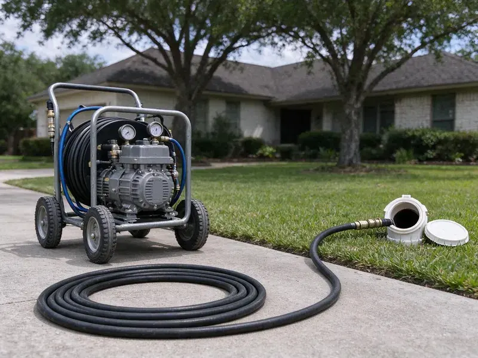

Hydro Jetting in Leesburg, VA
Hydro jetting in Leesburg, VA clears grease, roots and scale that a cable cannot reach.
- Same-Day Jetting Available
- Pipe-Safe Pressure Settings
- Removes Heavy Buildup
- Before and After Video

Get the Whole Pipe Cleaned in Leesburg, VA
Call FBN Plumbing and we will look at the pipe first, then quote the jetting.
Local Hydro Jetting in Leesburg, VA
FBN Plumbing runs a camera before every jetting job. That sets the pressure. Knowing the pipe material and condition lets us choose a nozzle and a pressure that clean well without harming older cast iron, clay or thin-walled pipe.
Some of what we do:
- Heavy grease and root clearing
- Scheduled maintenance jetting for restaurants
- Pre and post jetting video inspection with recordings

Additional Drain Services Services in Leesburg, VA
From stubborn kitchen clogs to main sewer backups, our drain services in Leesburg, VA restore full flow fast and keep it that way.


Customers
Why Choose FBN Plumbing for Hydro Jetting in Leesburg, VA?
Jetting cleans the pipe, not just the clog. A cable leaves the walls coated. That coating is why snaked lines clog again so fast, and why a jetted line usually holds much longer.
- Water Only, Nothing but water goes into the pipe, so there are no harsh chemicals to damage older lines.
- Root Cutting, Root-cutting nozzles slice through fine roots and flush them out of the sewer.
- Near-New Pipe, A jetted line comes out near its original diameter.
Citywide Coverage
Anywhere in Leesburg, VA, you can book jetting with us. One price list, citywide. You pay the same whether you live downtown or out on the edge of the service area, and you get the same equipment and camera check.
Experienced Team
These techs are trained to read pipe conditions on camera and choose pressure, flow and nozzle type to match. Experience runs deep. They have cleared everything from restaurant grease lines to root-choked clay laterals, and they know how to adjust when a line is not responding.
Safety-First Approach
Our jetters are inspected regularly. Hoses get checked often. We take every precaution, including a camera inspection before jetting and regular checks of hoses, nozzles and fittings, to prevent damage to your plumbing.
Trusted Certified Leesburg Plumbing Services Professionals
At FBN Plumbing, we are proud to offer certified plumbing services throughout Leesburg, VA. Credentials matter in this trade. Every repair, install and maintenance visit follows strict safety and quality rules, and the plumbers doing the work carry recognized industry credentials.
Call Us Now PHCC Plumbing Contractor Recognition
PHCC Plumbing Contractor Recognition Better Business Bureau (BBB) Accreditation
Better Business Bureau (BBB) Accreditation Angi Certified Pro
Angi Certified Pro ISO 9001 Quality Management Certification
ISO 9001 Quality Management CertificationHydro Jetting Work in Leesburg, VA
Large-Line Commercial Jetting in Leesburg, VA
Big buildings need trailer jetters. They push farther and harder. Restaurants, food processors, hotels and apartment complexes create heavy grease and solids loads, and we clean interceptor outlets, floor drains and main laterals on a schedule that fits your operation, with written records for inspections.

Hydro Jetting Cost Compared to Snaking in Leesburg, VA
Jetting costs more on the first visit. The results hold up better. If you are paying for snaking several times a year, jetting often costs less over time because it removes the coating that causes the repeat clogs in the first place, though a simple soft clog may only need a cable.
Emergency Hydro Jetting Services in Leesburg, VA
A full sewer backup needs fast help. Our jetting trucks run after hours. The emergency crew arrives with jetting equipment and a camera, clears the blockage and restores flow, so water stops coming up through the lowest drain and the damage stops spreading.
Kitchen Line Grease Jetting in Leesburg, VA
Grease clings and hardens. Flat runs are the worst. Jetting melts and scrubs that buildup away instead of poking a hole through it, using smaller hose and nozzles sized for 1-1/2 and 2 inch kitchen lines, so your sink and dishwasher drain properly for much longer.
Residential Hydro Jetting in Leesburg
Household lines collect a mix of buildup. Grease, hair, soap and detergent. We use nozzles and pressure settings that fit everything from a 1-1/2 inch kitchen line to a 4 inch main, so the jet cleans the pipe without blowing back into a fixture.
Sewer Line Descaling with Hydro Jetting in Leesburg
Scale shrinks the pipe from the inside. Repeat clogs follow. Water hardness in Virginia varies by region, with more mineral-heavy water in the western limestone valleys and softer water closer to the coast. Focused jets break the scale loose and wash it downstream, bringing the pipe back to full size and slowing the next buildup.
Hydro Jetting vs. Snaking Cost Comparison in Leesburg, VA
Snaking costs less up front. Jetting usually holds up better. A cable punches through the blockage and leaves residue on the walls, which brings the clog back, while jetting cleans the whole pipe and cuts down the number of service calls over time.

High-Pressure Water Jetting for Drain Cleaning in Leesburg
Our jetters run up to 4,000 PSI. That breaks apart hard buildup. Water at that pressure scours the pipe wall clean without chemicals, and it works on PVC, cast iron and clay when the pressure is set for the material and the condition of the pipe.
Hydro Jetting Near Me in Leesburg, VA
Our team lives and works in Leesburg. We see the same problems often. Because we see roots, soil movement and old pipe every week, we come prepared with the right setup.
Local jetting crews know local pipe. That shapes the job. Knowing the age of the area tells us what pipe to expect, and that tells us how hard to run the jetter.
FBN Plumbing at a Glance
- Licensed and insured plumbers serving Leesburg, VA
- 24/7 emergency service with same-day scheduling
- Clear written estimates, no hidden fees
- 4.9-star rated by 798+ Virginia customers
Leesburg Map
Leesburg Information
- Population
- 49,312
- Area codes
- 703/571/240
- Service area
- Leesburg and towns within a 40 mile drive
- Nearby
- Reston, Centreville, McLean, Arlington
Scale bonds with kitchen grease inside the pipe, so jetting is often the best way to get an older line in Leesburg, VA back to full flow. Water hardness in Virginia varies by region, with more mineral-heavy water in the western limestone valleys and softer water closer to the coast.
Talk to a Plumber
Reach out to FBN Plumbing for reliable plumbing work done by licensed pros in Leesburg, VA.
Our Specialized Plumbing Services in Leesburg, VA
At FBN Plumbing, you get every kind of plumbing service from one company across Leesburg, VA. We go from leak detection all the way to full system installations, for homes and commercial buildings, and we do it quickly at a fair price. Here are the core services we offer:


How It Goes When We Jet a Line in Leesburg, VA
Hydro jetting is done in a careful sequence to protect your pipes and get the most thorough clean.
Request a Quote
Call (434) 230-6997 and tell us about the clogs you are having and how often. We schedule an inspection and give you a ballpark price.
Inspect the Pipe
We run a camera to check pipe material, condition and the cause of the blockage. This tells us the safe pressure and the right nozzle.
Jet and Verify
We jet the line in passes until the walls are clean and the water runs clear. A final camera run confirms the result.
Frequently Asked Questions About Hydro Jetting in Leesburg
Expect $300 to $800 in Leesburg. Severity changes the price. Pipe length, diameter and whether a camera inspection is needed all affect the total, and long commercial lines or extensive roots land at the higher end, with a written estimate before work.
A thorough jetting often keeps a line clear for a year or more, depending on use and roots. Lines with heavy root intrusion may need regular maintenance or a repair.
For sound pipe, yes. Corroded lines need care. We inspect every line on camera before jetting, because a pipe that is already failing can break under pressure.
Sound PVC, cast iron and concrete handle it fine. Fragile lines are the exception. We always check pipe condition on camera first, so we never jet a line that cannot take the pressure.
Small consumer jetters exist, but they lack the pressure and flow of professional units. High-pressure water can also injure untrained users and damage fragile pipe.
Usually not. Jetting existing lines needs no permit. Should the job grow into a repair that alters the system, we tell you about any permit before starting.
Spartan Tool and MyTana jetters. Both are built for heavy use. They are known for reliable performance and solid safety features, and we pair them with nozzles sized for everything from kitchen branches to commercial mains.
Yes, on our workmanship. The length varies. The warranty term depends on the service and the condition of the pipe, and we go over all the details with you before starting any work on the line.
Hear From Customers Who Hired Our Plumbing Experts

Carlos V.
Our house still had galvanized pipe, and upstairs the shower was a trickle. The crew repiped everything in PEX over three days and patched every drywall hole before they left. The pressure difference is night and day.
Repiping · Centreville, VA
Mark T.
The floor drain in our office break room backed up every few weeks. The plumber ran a cable, then put a camera down and found roots at a joint about thirty feet out. Seeing it on the screen made the decision easy.
Drain Cleaning · Leesburg, VAPaul B.
Our pit pump ran nonstop even in dry weather. The plumber found the check valve was stuck open, so the same water kept cycling back into the pit. New valve, new float switch, done in an hour. It runs quiet now.
Sump Pump · McLean, VA
Lisa C.
Water was pouring out from under the washing machine on a holiday weekend. FBN Plumbing talked me through closing the valves over the phone and had a plumber at the house within ninety minutes. It was a burst fill hose.
Emergency Plumbing · Centreville, VA
Angela D.
Our sump pump quit during a storm and the water was an inch from the basement carpet. FBN Plumbing put in a new pump with a battery backup that same evening. We have had two heavy rains since. It kicked on both times.
Sump Pump · Arlington, VARachel N.
Hard water was leaving white crust on every faucet and our dishwasher was struggling. The tech tested the water, recommended a softener sized for a family of five, and installed it with a bypass valve in one afternoon. The spots on our glasses are gone.
Water Softener · Centreville, VA